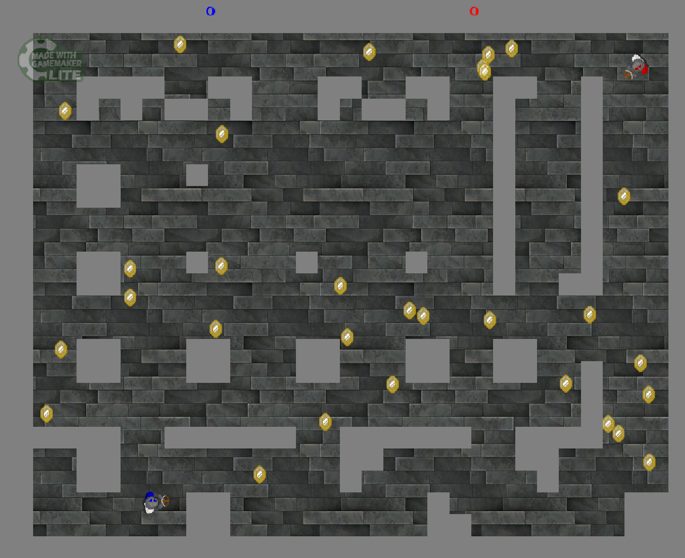

Description
X-BOW is a local multiplayer PvP game, taking inspiration from Towerfall Ascension and Nuclear Throne. It is my fifth Unity project and first original game. It took roughly 35+ days to complete.
Below is an in depth explanation of the design process of X-BOW. If you just want to view the code you can do so here.
Early Development
X-BOW started as a GameMaker Studio project that I made for my highschool game design class in 2015 (pictured below). I had been playing a game called Monaco: What's Yours Is Mine at the time and found using the crossbow very fun, so I created a little game centered around the mechanic of firing a crossbow. I wasn't capable of programming challenging AI, but in the computer lab it was easy to play with the person next to me, so it became a local multiplayer PvP game.
X-BOW prototype (2015)
After I started teaching myself real programming in 2022 by recreating Asteroids, Space Invaders, Snake, and Joust, I decided to revisit X-BOW and create a proper game. The first thing I wanted to change was the game's perspective - I didn't like the top down look of the game; I much preferred the top down oblique perspective of games like Nuclear Throne and Enter the Gungeon. Secondly, I wanted to add more depth to the combat of the game.
Game Design
I began redesigning the combat of the game by brainstorming possible mechanics (i.e. dodge rolling, shooting arrows out of midair, arrow catching, arrow reflecting, melee combat, slashing arrows out of midair, "speed shotting" arrows). I had four pillars of design that I followed to decide which mechanics to add to the game:
1. The crossbow is the core mechanic of the game, therefore it should not have too many ways to counter it
2. I wanted to add mechanics that promoted aggression and active playstyles rather than overly defensive or passive ones
3. Mechanics should have multiple uses to create interesting decisions
4. I wanted the additional abilities to have downsides or punish windows
Following these four design pillars, I decided on adding a dodge roll and a melee. The dodge roll has invincibility frames for the first half of the dodge, making it an excellent defensive move if timed well. The dodge can also be used to advance / reposition quickly and aggressively. If used incorrectly, however, it will lock you into a predictable movement and make you an easy target.
The melee can be used defensively to deflect an arrow away from you to save yourself, or offensively to reflect an arrow back at an enemy. After using your melee, it takes 1 second for your dino to recover, providing an ample punish window for your opponents to take advantage of. It also dovetails well with the dodge roll as it can help you close the distance for an aggressive melee kill. Not only can the melee be used for melee kills and reflects, but it can also be used for "speed shotting" your own arrows, wherein you fire an arrow and immediately melee speed boost it. You gain a faster arrow, but can't move for the next 1 second, so it is a risky decision.
These mechanics combine to create a fast-paced game full of interesting decisions and mind games.
Map Design
The map order in the level select is in chronological order of when they were developed, so you can easily/visually see the progression of X-BOW's map design for yourself. It started with maps that only had walls in a simple pattern before progressing into experimentation with interesting map gimmicks. Some things that I learned during development were:
1. Placing walls/cover was my primary method of designing the level, so it was easy to fall into the trap of adding too much. I had the urge to fill in the map with cover because that was the part I was actually creating, but empty space is just as important to the gameplay as cover. Some cut early maps were too constrictive and slowed the game down because I saw empty space as something to fill in. I had already hypothesized before I started designing levels that too much cover would restrict players and make the game less fun, but it still took me a couple of maps to correct my impulse.
2. I wanted the player's gameplay mechanics to be relatively simple, so for the game to hold the player's interest, it was up to the levels to put interesting spins on the gameplay loop. Bushes concealed players, dark levels concealed arrows. Portals are great for opening up maps and creating chaos. Arrow traps synergised well with the reflect mechanic. Targets made the levels more dynamic, as did moving platforms. Finally, slippery ice was just fun.
Credits
Dino Characters - arks.itch.io / @ScissorMarks
Main Environment Art - cainos.itch.io / @cainos_Chen
Lobby Dungeon Art - opengameart.org/user/buch
Dark Dungeon Art - raou.itch.io / @raoucemar
Water Sprites - ninjikin.itch.io / @CrystalScience
Spikes & Traps - stealthix.itch.io / patreon.com/Stealthix
VFX & Music - pixel-boy.itch.io / patreon.com/pixelarchipel
Level Music - ryanavx.itch.io / @ryanandbreezy
Sword Slash Effect - nyknck.itch.io / @nyk_nck
Animated Portals - elthen.itch.io / @pixelthen
Menu Art - danielriise.artstation.com / @NostalgiaTree
Arrow Sprites - Towerfall Ascension
Sprites/Sounds Various - Nuclear Throne
Download X-BOW[47].zip